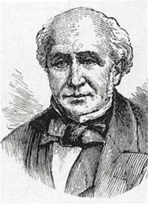

One of the great things about the community around this site is others sharing resources and ideas. On our facebook page Sam Goodes shared this awesome hymn:

We limit not the truth of God
To our poor reach of mind,
By notions of our day and sect,
Crude, partial, and confined.
No, let a new and better hope
Within our hearts be stirred:The Lord hath yet more light and truth
To break forth from His Word.Darkling our great forefathers went
The first steps of the way;
’Twas but the dawning yet to grow
Into the perfect day.
And grow it shall, our glorious sun
More fervid rays afford:The Lord hath yet more light and truth
To break forth from His Word.The valleys passed, ascending still,
Our souls would higher climb,
And look down from supernal heights
On all the bygone time.
Upward we press, the air is clear,
And the sphere-music heard:The Lord hath yet more light and truth
To break forth from His Word.O Father, Son, and Spirit, send
Us increase from above;
Enlarge, expand all Christian souls
To comprehend Thy love,
And make us to go on, to know
With nobler powers conferred:The Lord hath yet more light and truth
To break forth from His Word.
{kind=link}
George Rawson wrote the lyrics. They are based on a 1620 farewell speech by John Robinson to the pilgrims who were about to set sail on the Mayflower. Here is a portion of that speech:
I charge you before God and His blessed angels that you follow me no further than you have seen me follow Christ. If God reveal anything to you by any other instrument of His, be as ready to receive it as you were to receive any truth from my ministry, for I am verily persuaded the Lord hath more truth and light yet to break forth from His Holy Word.
The hymn appeared in the Leeds Hymn Book in 1835 with the above quote.
If you want to make “forefathers” inclusive – “ancestors” scans just as well. You are clever enough to make adaptations yourself if your community prefers more contemporary wording (…has yet more light…).
The tune, music, and guitar chords can be found here. Of course, it can be sung to any 86868686 tune.